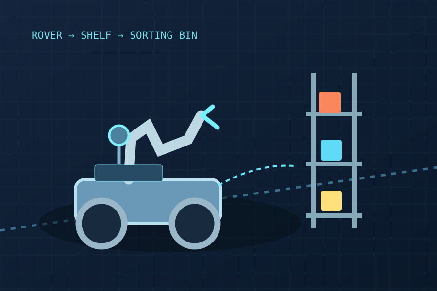

SYSTEM ILLUSTRATIONAutonomous Mobile Manipulation
Leo Rover · ROS 2 · Navigation & task management
A five-person team project to develop a mobile robot that detects coloured blocks, approaches them and sorts them using a robotic arm.
My contribution
Software lead for navigation and task management. Established ROS 2 communication, implemented odometry-based driving and rotation, tested LiDAR scans in RViz and organised the shared code workflow.
In progress: improving motion response, rotation accuracy and integration with perception/manipulation.
View team repository